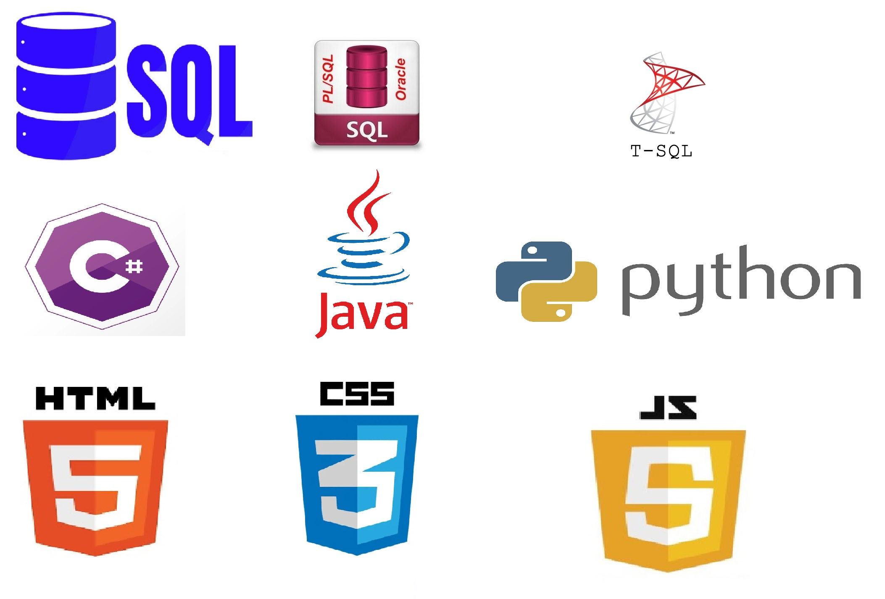

TLILI ABDERRAOUF
PORTFOLIO
-
As a recent graduate of an AEC (College Diploma) in Database Design from Bois-de-Boulogne College, I have honed advanced skills in business intelligence and data analysis. I specialize in developing robust BI systems using ETL and Microsoft BI tools (SSIS, SSAS, SSRS). My academic journey has also equipped me with extensive programming knowledge and proficiency in modern languages and tools such as .Net/c#, Java, Python, SQL, JavaScript, HTML, and CSS. Additionally, I have a strong grasp of SQL Server and stored procedures (PL/SQL and T-SQL).
My portfolio showcases the culmination of my expertise and passion for programming, business intelligence, and data analysis. Through innovative projects, I have demonstrated my ability to transform complex data into actionable insights, empowering organizations to make informed decisions.
With a collaborative and team-oriented approach, I thrive in dynamic environments and enjoy tackling challenging problems. Effective communication, both in written and oral forms, is one of my key strengths, enabling me to convey technical concepts to diverse audiences with clarity and precision. I take pride in my analytical mindset, which enables me to dissect intricate issues and devise creative solutions.
My portfolio reflects my dedication to delivering exceptional results and contributing value to any organization I work with. I am excited to explore new opportunities and connect with like-minded professionals in the field of data programming or data analysis. Feel free to explore my portfolio and get in touch to discuss potential collaborations or to learn more about my skills and experiences. Thank you for visiting!
 Buisness Intelligence
Buisness Intelligence
 Programming
 Frameworks
Frameworks
 Continuous Integration and Continuous Deployment
Continuous Integration and Continuous Deployment
 Quality Assurance and Testing
Quality Assurance and Testing
- © Untitled
- Design: HTML5 UP